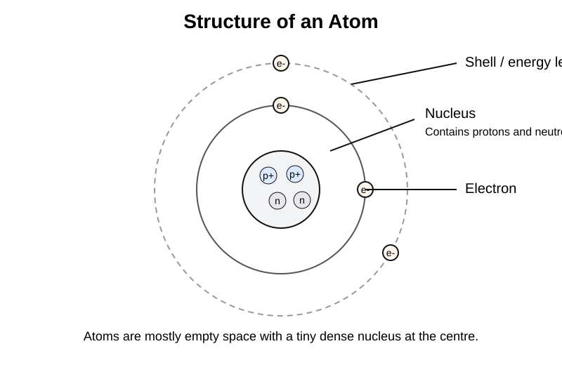

GCSEs for Dads – Physics 4: Atomic Structure and Radiation
Don’t worry about reading the formulas now. Just know they’re here at the top if you need them. Scroll down to start.
You don’t need to memorise these formulas. Just know where to find them.
Physics 4: Atomic Structure and Radiation
1. The Big Idea (30 seconds)
- Everything is made of atoms.
- Atoms are incredibly small but contain even smaller particles.
- Some nuclei are unstable and give out radiation.
- This matters in medicine, industry, archaeology and energy.
2. Structure of the Atom
Atoms contain three main particles.
| Particle | Charge | Relative Mass | Location |
|---|---|---|---|
| Proton | +1 | 1 | Nucleus |
| Neutron | 0 | 1 | Nucleus |
| Electron | -1 | Very small | Electron shells |
Important ideas
- The nucleus is tiny but contains most of the mass.
- Electrons move around the nucleus in energy levels, also called shells.
- Atoms are mostly empty space.
Example: Carbon atom
- 6 protons
- 6 neutrons
- 6 electrons

3. How Our Model of the Atom Changed
Scientists improved the atomic model over time.
Dalton
- Atoms were thought to be solid spheres.
Thomson
- Discovered electrons.
- Proposed the plum pudding model.
- A ball of positive charge with electrons embedded in it.
Rutherford
- Used the gold foil experiment.
- Showed that atoms are mostly empty space.
- Found that a tiny, dense nucleus exists at the centre.
Bohr
- Proposed that electrons move in fixed energy levels around the nucleus.
Modern model
- Protons and neutrons are in the nucleus.
- Electrons are in energy levels around the nucleus.

4. Isotopes
Atoms of the same element can have different numbers of neutrons.
These are called isotopes.
Example: Carbon isotopes
| Isotope | Protons | Neutrons |
|---|---|---|
| Carbon-12 | 6 | 6 |
| Carbon-13 | 6 | 7 |
| Carbon-14 | 6 | 8 |
Key rule
- Same number of protons = same element
- Different number of neutrons = different isotope

5. Radioactivity
Some atomic nuclei are unstable.
They break down and release radiation. This process is called radioactive decay.
Important facts
- Radioactive decay is random.
- You cannot predict exactly when one nucleus will decay.
- You can measure the rate of decay for a large sample.
6. Types of Nuclear Radiation
There are three main types.
Alpha radiation (α)
Alpha particles contain: - 2 protons - 2 neutrons
This is the same as a helium nucleus.
Properties: - heavy particle - strongly ionising - very short range
Stopped by: - paper - skin
Danger: - not very dangerous outside the body - dangerous if inhaled or swallowed
Beta radiation (β)
Beta radiation is a fast electron.
Properties: - medium penetration - medium ionising power
Stopped by: - thin aluminium
Gamma radiation (γ)
Gamma rays are electromagnetic waves.
Properties: - no mass - no charge - very penetrating - weakly ionising
Stopped by: - thick lead - thick concrete

7. Half-Life
Radioactive materials decay over time.
Half-life is the time taken for half of the unstable nuclei in a sample to decay.
Example starting with 800 atoms
- After one half-life, 400 atoms remain
- After two half-lives, 200 atoms remain
- After three half-lives, 100 atoms remain
The amount halves each time.

8. Uses of Radiation
Radiation has several useful applications.
Medicine
- cancer treatment using radiotherapy
- medical tracers
- sterilising equipment
Industry
- thickness gauges for paper and metal
- leak detection in pipes
Archaeology
- carbon dating to estimate the age of ancient objects
9. Nuclear Safety
Radiation can damage cells and tissue.
Scientists reduce exposure using three main methods:
- Time: reduce the time spent near the source
- Distance: stay further from the source
- Shielding: use dense materials such as lead

10. Check Your Understanding
- What particles are found in the nucleus? (protons and neutrons)
- What charge does an electron have? (negative)
- What is an isotope? (atoms of the same element with different numbers of neutrons)
- Which type of radiation is the most penetrating? (gamma)
- Which type of radiation is stopped by paper? (alpha)
- What is half-life? (the time taken for half the unstable nuclei to decay)
- Why is alpha radiation especially dangerous inside the body? (because it is strongly ionising)
- What are the three main ways of reducing radiation exposure? (time, distance and shielding)
11. Common Exam Traps
-
Mass number and atomic number are not the same
Atomic number = number of protons.
Mass number = protons + neutrons. -
Isotopes are not different elements
They are the same element because they have the same number of protons. -
Radiation is random
You cannot predict when one nucleus will decay. -
Gamma is not a particle
It is an electromagnetic wave. -
Alpha is weak at penetrating but strong at ionising
Those are different ideas.
12. Quick Memory Hooks
- atom = tiny structure making up matter
- nucleus = dense centre
- isotope = same protons, different neutrons
- alpha = heavy and strongly ionising
- beta = medium penetration
- gamma = most penetrating
- half-life = halves each time
- radiation safety = time, distance, shielding
13. Now Watch These
14. Real-Life Questions
Question 1
Why can alpha radiation be stopped by a sheet of paper?
Answer:
Alpha particles are relatively large and heavy. They collide easily with atoms in the paper, so they lose energy quickly and cannot travel far.
Question 2
Smoke detectors use a small radioactive source. Explain how this helps detect smoke.
Answer:
The radioactive source emits alpha radiation, which ionises the air and allows a small electric current to flow. When smoke enters the detector, it absorbs the alpha particles, so the current drops and the alarm is triggered.